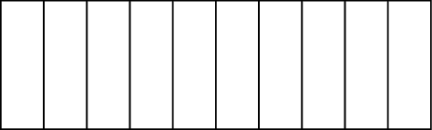

\documentclass[varwidth]{standalone}
\usepackage{tikz}
\usetikzlibrary{positioning}
\usetikzlibrary{chains}
\usetikzlibrary{shapes.multipart}
\begin{document}
\newlength\nodewidth
\setlength\nodewidth{120mm}
\begin{tikzpicture}
\tikzset{every node/.style={rectangle split, draw, rotate=90}, rectangle split parts=10}
\node[rectangle split, minimum width= 1.2cm,
minimum height = 1cm] {};
\end{tikzpicture}
\end{document}Created by David Li